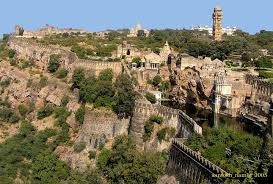

Sociedad

La sociedad del imperio Maurya se caracterizaba por un sistema de castas o grupos sociales, una administración burocrática eficiente y una economía relativamente socializada. Se dividía en siete grupos, los filósofos (monjes, sacerdotes, maestros), agricultores, soldados, pastores, artesanos, jueces y consejeros.
La burocracia era altamente organizada y el imperio implementó un sistema de espionaje y un ejército permanente para garantizar la seguridad. La economía se basaba en la agricultura, con el rey como propietario de la tierra y el gobierno central regulando el comercio.
Aspectos del Imperio Maurya
| Aspecto | Descripción |
|---|---|
| Sistema de castas | La sociedad maurya se dividía en castas: brahmanes (sacerdotes), kshatriyas (guerreros), vaishyas (comerciantes) y shudras (trabajadores). También existían los parias o intocables. El sistema definía ocupaciones, derechos y obligaciones. Los matrimonios entre castas eran generalmente prohibidos. |
| Economía | Basada principalmente en la agricultura. El comercio interno y externo era regulado por el gobierno. Existían gremios de artesanos y comerciantes. La moneda imperial facilitaba el intercambio, y el espionaje aseguraba el orden económico. |
| Cultura y religión | Predominaba el hinduismo, pero Ashoka adoptó el budismo y promovió la no violencia. Los edictos de Ashoka difundían moralidad, tolerancia y protección de animales y bosques. El budismo se extendió incluso fuera de la India mediante misiones religiosas. |
| Aspectos sociales | Las mujeres tenían roles distintos según su casta. Las castas altas tenían menos libertad pública. Existía un sistema de bienestar social, hospitales y carreteras. La cultura incluía danza, música, literatura y pintura. |